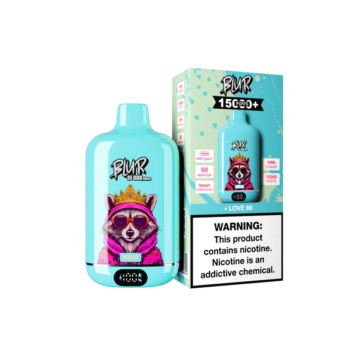
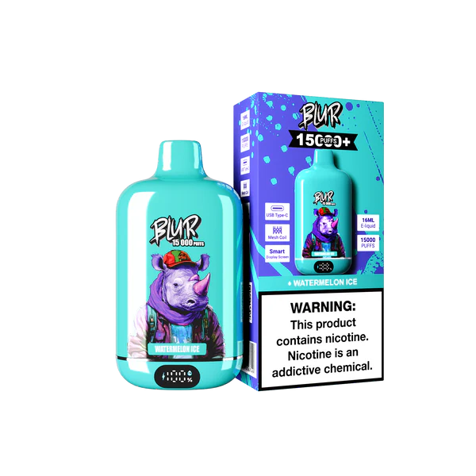
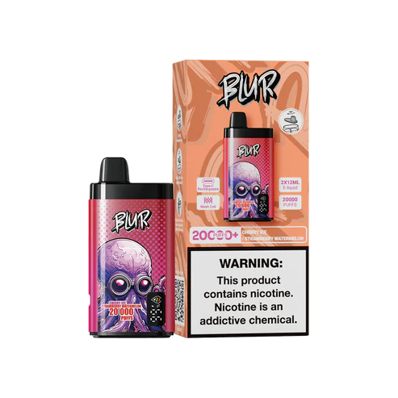
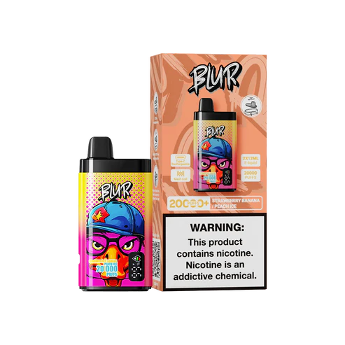
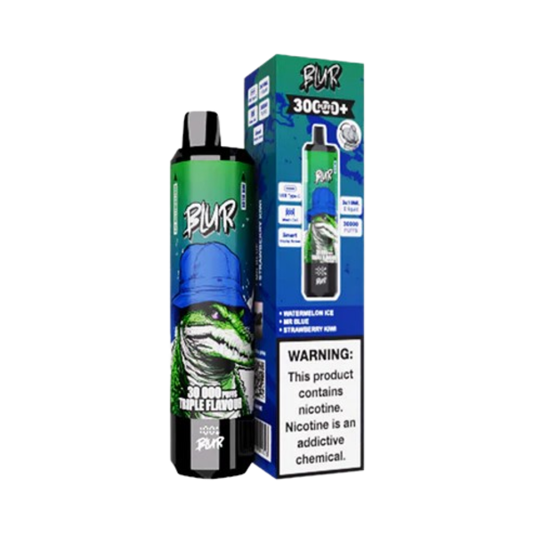

Blur vapers desechables 15K, 20K y 30K en España
BlurVaper.es reúne una selección de Blur vapers desechables para usuarios adultos en España. Compara modelos 15K, 20K y 30K por sabores, caladas y formato antes de acceder a la ficha de producto en elVapero.es.

Love 66 ❤️
Vaper desechableUn vaper desechable Blur 15K con sabor visible Love 66 y hasta 15000 caladas aproximadas, según el uso. Una opción para usuarios adultos que comparan formato, autonomía y características visibles.
Strawberry Ice 🍓❄️
Vaper desechableStrawberry Ice 15K combina un perfil frutal y fresco con hasta 15000 caladas aproximadas, según el uso. Una opción dentro de la categoría Blur 15K para comparar sabor, formato y autonomía.


Cherry Ice / Strawberry Watermelon 🍒🍓🍉
Cigarrillos ElectrónicosBlur 20K permite comparar un formato de mayor autonomía con hasta 20000 caladas aproximadas, según el uso. Esta versión muestra sabores visibles como Cherry Ice y Strawberry Watermelon, con un enfoque práctico y fácil de revisar antes de abrir la ficha.
Strawberry Banana / Peach Ice 🍓🍌❄️
Cigarrillos ElectrónicosBlur 20K es una opción para usuarios adultos que comparan más autonomía y combinaciones de sabores visibles. Strawberry Banana y Peach Ice permiten revisar perfiles frutales y frescos según la ficha del modelo.


Watermelon Ice / Mr Blue / Strawberry Kiwi 🍉💙🍓🍏
Cigarrillos Electrónicos DesechablesBlur 30K está orientado a usuarios adultos que comparan modelos de mayor autonomía, con hasta 30000 caladas aproximadas según el uso. Esta versión permite revisar sabores visibles como Watermelon Ice, Mr Blue y Strawberry Kiwi.
Peach Ice / Blueberry On Ice / Strawberry Raspberry Cherry 🍑💙🍓❄️
Cigarrillos Electrónicos DesechablesBlur 30K permite comparar un formato de mayor capacidad con hasta 30000 caladas aproximadas, según el uso. Peach Ice, Blueberry On Ice y Strawberry Raspberry Cherry son sabores visibles asociados al modelo.
Blur vapers desechables: 15K, 20K y 30K caladas
BlurVaper.es permite comparar modelos Blur con diferentes cantidades de caladas, formatos y sabores visibles. Los usuarios adultos pueden revisar la selección antes de abrir la ficha correspondiente en elVapero.es.
Blur 15K
Modelos orientados a quienes buscan un formato práctico con hasta 15000 caladas aproximadas, según el uso.
Blur 20K
Opciones intermedias para usuarios que quieren más autonomía y combinaciones de sabores visibles.
Blur 30K
Modelos orientados a usuarios que comparan más caladas, autonomía aproximada y formato de mayor capacidad.
Comparativa de Blur 15K, 20K y 30K
La cantidad de caladas ayuda a comparar la autonomía aproximada de cada modelo. La duración real puede variar según la frecuencia de uso, la duración de cada inhalación y las características del dispositivo.
| Modelo | Caladas aproximadas | Uso recomendado |
|---|---|---|
| Blur 15K | 15000 caladas | Usuarios que buscan un formato práctico y sabores directos. |
| Blur 20K | 20000 caladas | Opción intermedia para comparar más autonomía. |
| Blur 30K | 30000 caladas | Usuarios que comparan mayor duración aproximada y variedad de sabores visibles. |
AUTONOMÍA DESTACADA
Modelos con diferentes caladas para comparar duración aproximada según el uso.FORMATO CÓMODO
Dispositivos listos para usar, sin configuraciones complicadas.SABORES DEFINIDOS
Combinaciones visibles de sabores frutales, frescos y dulces según el modelo.Comprar Blur vapers desechables online en España
BlurVaper.es está orientado a usuarios adultos en España que quieren comparar Blur 15K, Blur 20K y Blur 30K antes de acceder a una ficha de producto. La página resume sabores, caladas y formatos visibles sin crear listas de enlaces repetitivos.
Preguntas frecuentes
¿Dónde comprar Blur vapers desechables online en España?
Puedes consultar modelos Blur destacados en BlurVaper.es y acceder a sus fichas de producto en elVapero.es para revisar caladas, sabores visibles, imágenes y disponibilidad antes de comprar online.
¿Qué modelos Blur aparecen en esta página?
En esta página aparecen modelos Blur 15K, Blur 20K y Blur 30K, con diferentes sabores visibles y enlaces a sus fichas de producto en elVapero.es.
¿Qué diferencia hay entre Blur 15K, 20K y 30K?
La diferencia principal es la autonomía aproximada. Blur 15K ofrece hasta 15000 caladas, Blur 20K hasta 20000 caladas y Blur 30K hasta 30000 caladas, según el uso.
¿Cómo elegir un Blur vaper desechable?
Compara la cantidad de caladas, el sabor visible, el formato del dispositivo y las características descritas en la ficha. Si buscas mayor duración, revisa modelos con más caladas.
¿Los Blur vapers desechables son para adultos?
Sí. Esta página está dirigida exclusivamente a usuarios mayores de 18 años. Los productos con nicotina deben utilizarse de forma responsable y solo por adultos.
¿En qué ciudades de España se puede consultar esta selección?
La información está orientada a usuarios adultos en España, incluyendo Madrid, Barcelona, Valencia, Sevilla, Zaragoza, Málaga, Bilbao, Alicante, Murcia, A Coruña, Granada, Palma de Mallorca, Valladolid, Córdoba y Vigo.